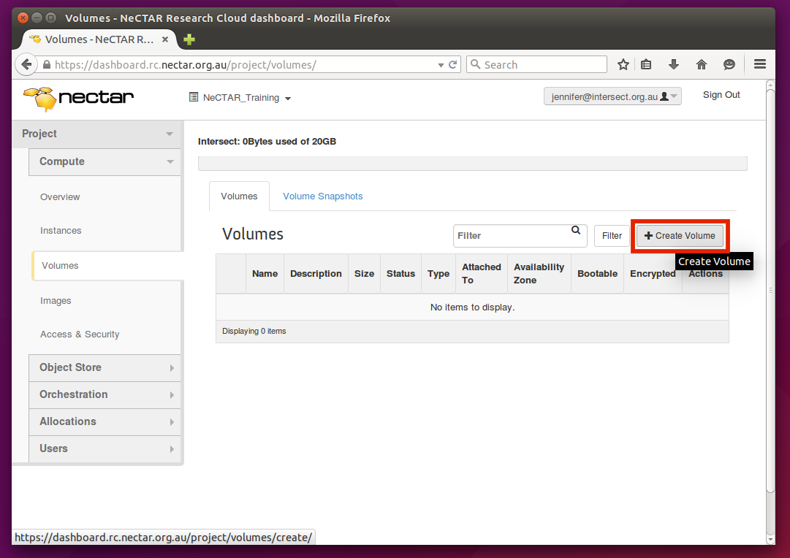
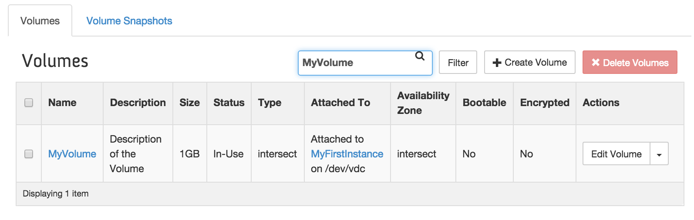
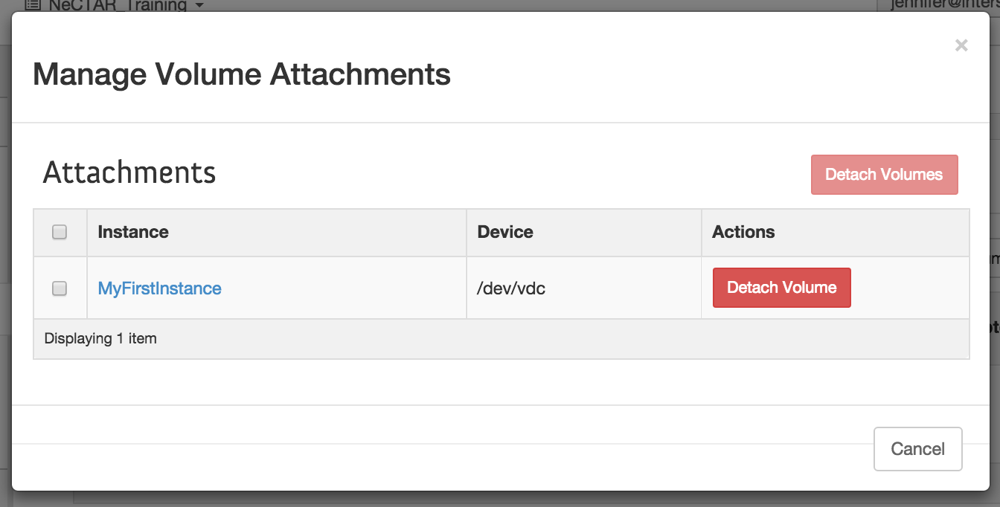

Module 7
Launching and Connecting
Sections of this module:
IntroductionCreate a ssh key
Launching an instance
Connect to the instance
Configuration and control
Connect to a remote desktop
Graphical Interfaces on the ssh terminal
Install a web server
Managing storage
On-instance storage
Object storage
Volume storage
Copying files across
Summary
Appendix
View all sections on one page (Printer friendly)
Volume storage
This section is going to go through the steps required to use Volume storage from your instance. You are going to
- Create a Volume storage
- Attach the Volume to the instance
- Prepare the Volume for use within your instance

You need to submit an allocation request in order to be able to use volumes. The trial account does not include quota for volumes.
You can only use volume storage from instances running in the same Availability Zone which you have also chosen with your allocation. Therefore, you need to select the same Availability Zone when launching your instance. If you haven’t done so when launching the instance, you’ll have to launch a new one, as described in this earlier section, and select your allocation zone in the Availability zone tab.
There are two options how to manage volumes: (1) on the Dashboard or (2) via command line.
In this module, we will only cover managing volumes via the Dashboard. Module 10 will show how we can manage volumes with commands.
Step 1: Creating the volume.
Before you can use a volume, you have to create it.
Go to Compute > Volumes and click on the + Create Volume button on the top right.

A window opens in which you can give your Volume a name, and add a description.

There are also other options which you can specify:
Volume Source: You can either choose to create an empty volume, or create a volume from an image. The latter is useful if you want to create a volume which already has specific data on it. It is possible to save (or back up) a volume by creating an image of it - we will see how to do this in Module 9.
You may want to restore a volume that you previously have saved as an image, or someone else may have sent you an image with data on it which you should have access to. When you create a volume from an image, your volume will have all the data on it that was on the volume when the image was created of it.
In this tutorial, we will create an empty volume.
Type: This field isn’t currently used, it’s there for future expansion. Leave this at “No volume type”.
Size(GB): Type in the desired size (in GB) of your volume.
Availability zone: Select your availability zone. It must be the same in which your instance is running. Creation of the volume will only work if you have a volume allocation at this availability zone.
Click “Create volume” and you will see your new volume in the list of volumes. The Status should switch to “Available” after it has been created. This can take a few minutes.
Step 2: Attaching / Detaching volumes.
Before you can access the volume, you have to attach it to an instance. On the Dashboard, go to “Compute → Volumes” in the left navigation pane if you are not already on the page which shows the list of your volumes. On the right side next to your volume there is a drop-down box.
Select Edit attachments.

A window will open in which you can select your instance. If you don’t see any instance, you have no instance running in the same Availability Zone. In this case, create one as described in this earlier section.

Select your instance and click Attach Volume. The status of your instance will switch to “Attaching”, and when it has been attached successfully, it should display “In-Use”. You should also see the Server and Device that the volume is attached to. In the example below, it is attached to MyFirstInstance and to the device /dev/vdc.

In order to detach the volume again, you would go to the drop-down next to your volume again and select Edit attachments. A window opens in which you may detach the volume again. Your data won’t be lost, it will only be detached from the particular instance. You can re-attach it later again to any instance.

Step 3: Preparing your volume for use.
After you have created your Volume and attached it to your instance you will have to take a few extra steps to prepare that volume for use: you will have to (1) format it and (2) mount it.
The section about On-Instance Storage has more information about formatting and mounting drives.
Log in to your instance via ssh (or use a terminal on your remote desktop) to type in the following commands.
Step 3.1. Look up where your volume has been created
On your Dashboard, go to Compute > Volumes and you should see your volume. In the column Attached to it should display something like
“Attached to <YourInstanceName> on /dev/vdc”
It may also be attached to /dev/vdb, /dev/vdd or something else. Take note of the device name that it has been attached to and use this instead of /dev/vdc in the following.
Step 3.2: Format the volume.

Formatting erases all data. All your data on this volume will be lost. You should do this only the first time you use the volume, or if you are sure that you want to erase all data. If you don’t want to erase the data, skip to the next step.
A new Volume may not have a file system (depending on how it was created) and you need to create one before mounting.
The exact command syntax is depends on the instance’s operating system and the type of filesystem you require. In this example we will create an ext4 file system (a popular file system on linux) for an Ubuntu 14.10 instance.
To format the drive, type:
sudo mkfs.ext4 /dev/vdc
Display information about your disks with
sudo lsblk -f
or
sudo parted -l
This should now show that /dev/vdc has the ext4 file system.
Step 3.3: Mount the volume.
Mounting a disk has already been discussed in detail for the secondary drive of the Ephemeral storage, so at this point, only a summary is provided:
To mount your volume, you will have to create a folder first to which the device will be mounted, e.g.:
mkdir ~/MyVolumeStore
Then, mount this folder:
sudo mount /dev/vdc ~/MyVolumeStore
This will mount the disk if the type of file system can be guessed.
Otherwise you may have to specify the file system type with the -t option, e.g.
sudo mount /dev/vdc ~/MyVolumeStore -t ext4.
If you did not create and format the Volume then you can look up the filesystem type:
sudo parted -l
You can now access your volume on ~/MyVolumeStore (MyVolumeStore in your home directory). You may not have write permission on the Volume yet, you can allow write access for the user ubuntu with:
sudo chown ubuntu ~/MyVolumeStore
Alternatively, you may grant write access to the <user group> (replace <user group> with the name of the user group, e.g. ubuntu):
sudo chgrp <user group> ~/MyVolumeStore
sudo chmod g+rwx ~/MyVolumeStore

 This work is licensed under a
This work is licensed under a